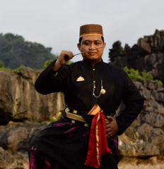

Raja Gowa ke-9 Tumaparisi Kallonna (1510-1546) diperkirakan adalah tokoh pertama yang benar-benar mengembangkan kota Makassar.[16] Ia memindahkan pusat kerajaan dari pedalaman ke tepi pantai, mendirikan benteng di muara Sungai Jeneberang, serta mengangkat seorang syahbandar untuk mengatur perdagangan.[16]
Pada abad ke-16 hingga abad ke-17, Makassar menjadi pusat perdagangan yang dominan di Indonesia Timur, sekaligus menjadi salah satu kota terbesar di Asia Tenggara. Raja-raja Makassar menerapkan kebijakan perdagangan bebas yang ketat, di mana seluruh pengunjung ke Makassar berhak melakukan perniagaan di sana dan menolak upaya VOC (Belanda) untuk memperoleh hak monopoli di kota tersebut.
Geografis
Makassar adalah ibu kota provinsi Sulawesi Selatan, yang terletak di bagian Selatan Pulau Sulawesi yang dahulu disebut Ujung Pandang, terletak antara 119º24’17’38” Bujur Timur dan 5º8’6’19” Lintang Selatan yang berbatasan sebelah Utara dengan Kabupaten Maros dan Kabupaten Pangkajene dan Kepulauan (Kecamatan Liukang Tupabiring), sebelah Timur Kabupaten Maros (Kecamatan Mocongloe) dan Kabupaten Gowa (Kecamatan Pattallassang), sebelah selatan Kabupaten Gowa (Kecamatan Somba Opu dan Barombong) dan Kabupaten Takalar (Kecamatan Galesong Utara), serta sebelah Barat dengan Selat Makassar. Kota Makassar memiliki topografi dengan kemiringan lahan 0-2°(datar) dan kemiringan lahan 3-15° (bergelombang). Luas Wilayah Kota Makassar tercatat 175,77 km
Wisata
Makassar, kota terbesar sekaligus ibukota Sulawesi Selatan, menyimpan banyak sekali pesona. Kota terbesar kelima di Indonesia ini punya berbagai jenis wisata, dari wisata alam, religi, histori, tematik, edukasi, dan lainnya. Spot wisata Makassar sangat menarik untuk dijelajahi
Benteng Rotterdam
Pantai Losari
Pulau Samalona
Budaya
Aru' Mangkasarak

Ata karaengTabe’ kipammopporang mama’
Ri dallekang malaa’ biritta
ri sa’ri karatuanta ri empoang matinggita
Inakke minne karaeng Lambara tatasalanna turatea
Nakareppekangi sallang karaeng Panngulu ri barugayya
Nakatepokangi sallang karaeng Pasorang attannga parang
Inai-inaimo sallang karaeng Tamappattojengi tojenga
Tamappiadaki adaka Kusalagai sirinna kuisara parallakkenna
Berangja kunipatebba pangkulu’ kunisoeyang dst....
Aru adalah pesan yang hendak disampaikan, sementara pesan yang disampaikan disebut Angngaru. Aru merupakan salah satu sastra kebudayaan makassar yang berisi tentang sumpah atau ikrar yang diucapkan abdi kepada raja, raja kepada abdinya, atau masyarakat kepada Aru